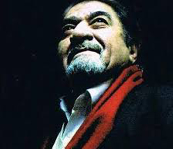
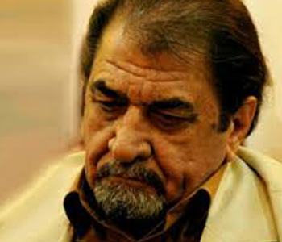
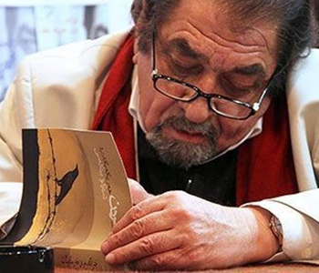
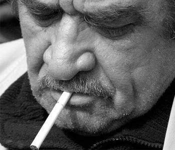
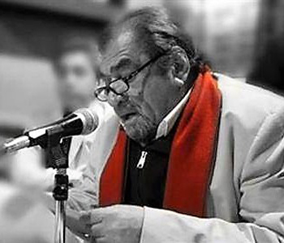
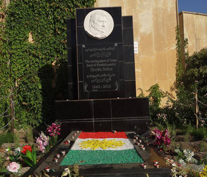

Facebook Page

Kurdistan PageSherko Bekas (May 2, 1940 - August 4, 2013)Sherko Bekas (left) and Mazhar Khaleqi / WikiPedia

Sherko Bekas signing one of his books / rudaw

Sherko Bekas/ Soundcloud

Reading some of his peomes / pirtukweje

Sherko Bekas grave at Azadi Park